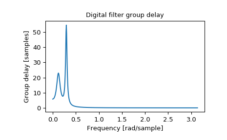

scipy.signal.group_delay¶
-
scipy.signal.group_delay(system, w=512, whole=False, fs=6.283185307179586)[source]¶ Compute the group delay of a digital filter.
The group delay measures by how many samples amplitude envelopes of various spectral components of a signal are delayed by a filter. It is formally defined as the derivative of continuous (unwrapped) phase:
d jw D(w) = - -- arg H(e) dw
- Parameters
- systemtuple of array_like (b, a)
Numerator and denominator coefficients of a filter transfer function.
- w{None, int, array_like}, optional
If a single integer, then compute at that many frequencies (default is N=512).
If an array_like, compute the delay at the frequencies given. These are in the same units as fs.
- wholebool, optional
Normally, frequencies are computed from 0 to the Nyquist frequency, fs/2 (upper-half of unit-circle). If whole is True, compute frequencies from 0 to fs. Ignored if w is array_like.
- fsfloat, optional
The sampling frequency of the digital system. Defaults to 2*pi radians/sample (so w is from 0 to pi).
New in version 1.2.0.
- Returns
- wndarray
The frequencies at which group delay was computed, in the same units as fs. By default, w is normalized to the range [0, pi) (radians/sample).
- gdndarray
The group delay.
See also
freqzFrequency response of a digital filter
Notes
The similar function in MATLAB is called grpdelay.
If the transfer function \(H(z)\) has zeros or poles on the unit circle, the group delay at corresponding frequencies is undefined. When such a case arises the warning is raised and the group delay is set to 0 at those frequencies.
For the details of numerical computation of the group delay refer to [1].
New in version 0.16.0.
References
- 1
Richard G. Lyons, “Understanding Digital Signal Processing, 3rd edition”, p. 830.
Examples
>>> from scipy import signal >>> b, a = signal.iirdesign(0.1, 0.3, 5, 50, ftype='cheby1') >>> w, gd = signal.group_delay((b, a))
>>> import matplotlib.pyplot as plt >>> plt.title('Digital filter group delay') >>> plt.plot(w, gd) >>> plt.ylabel('Group delay [samples]') >>> plt.xlabel('Frequency [rad/sample]') >>> plt.show()
